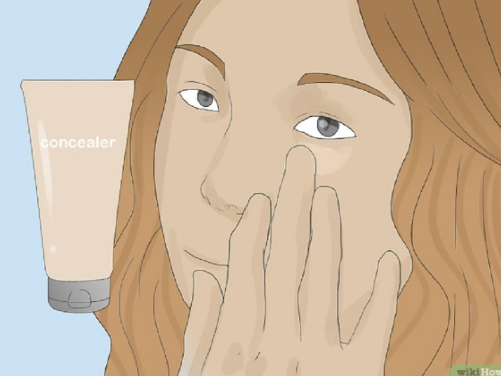
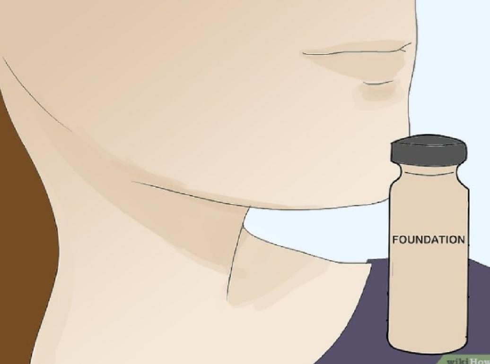
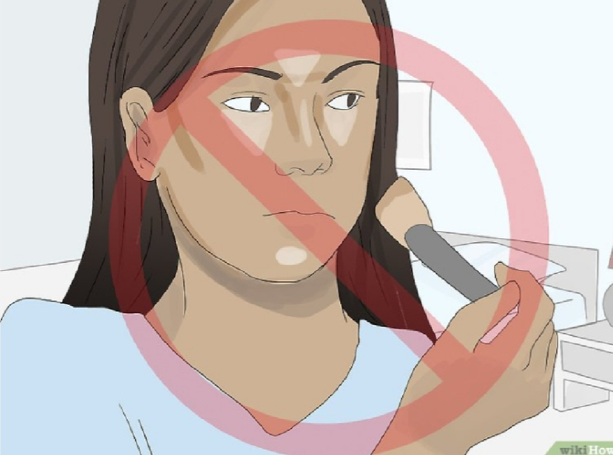
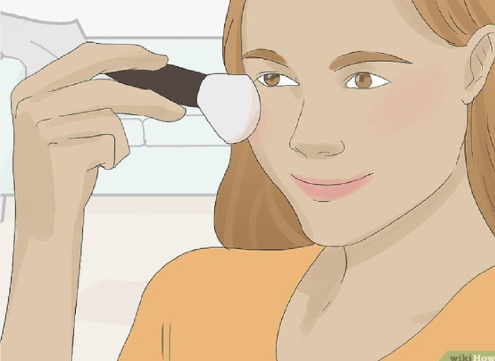
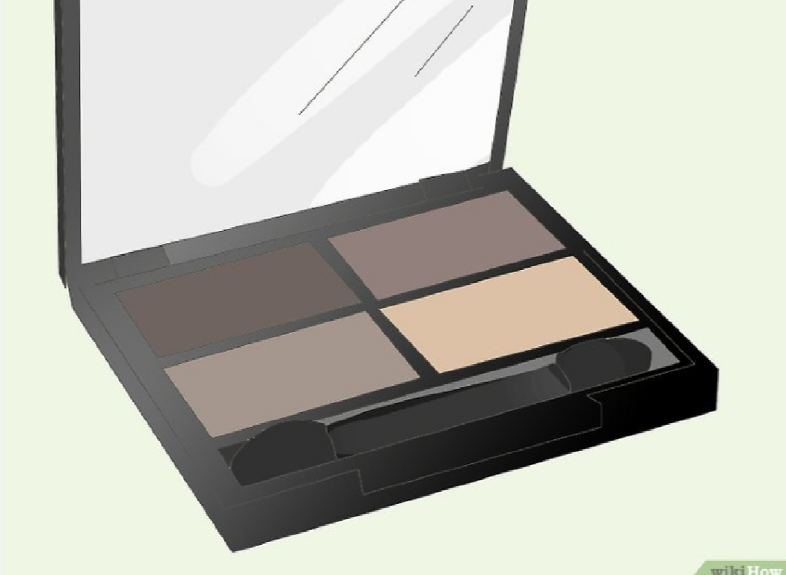
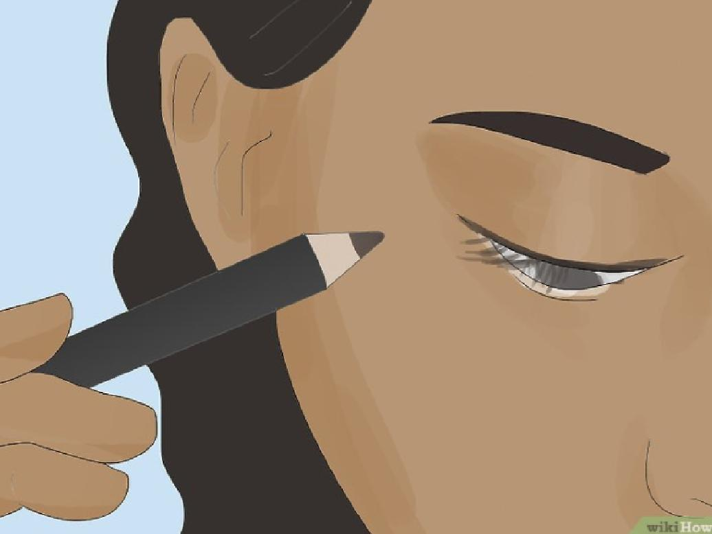
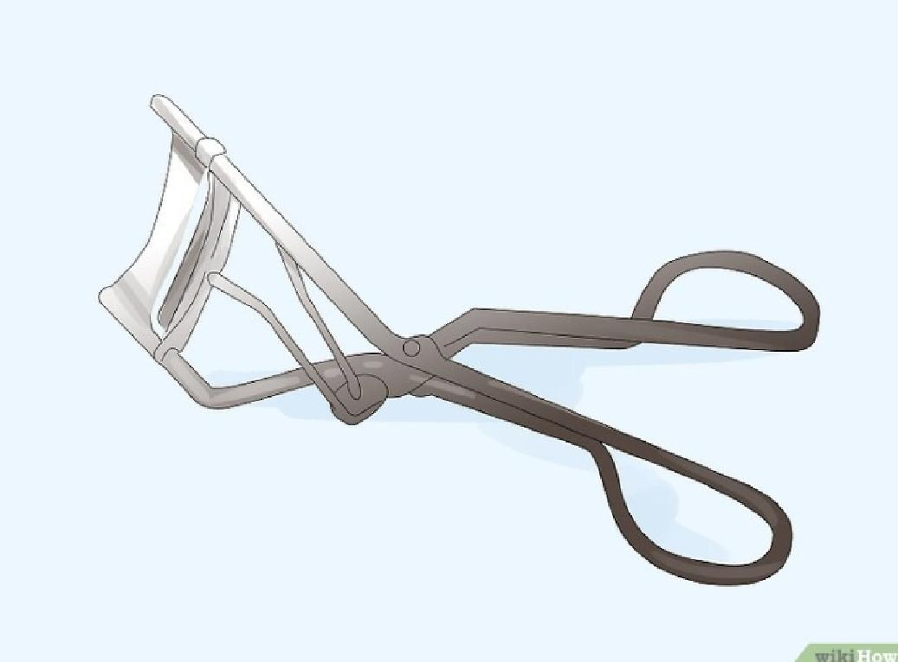
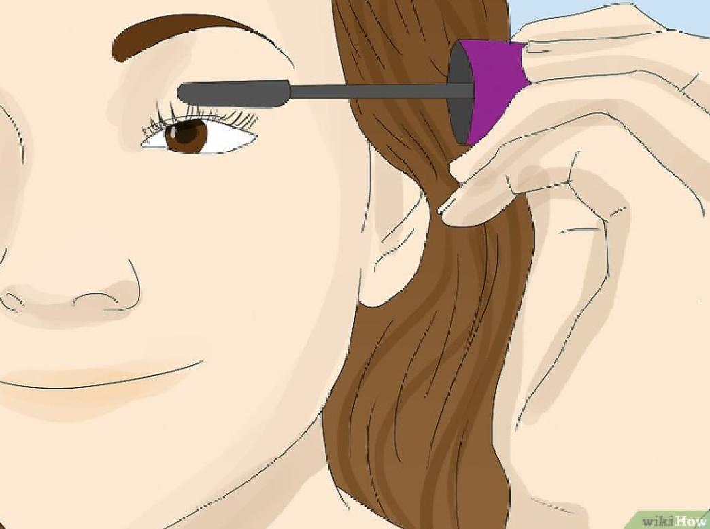
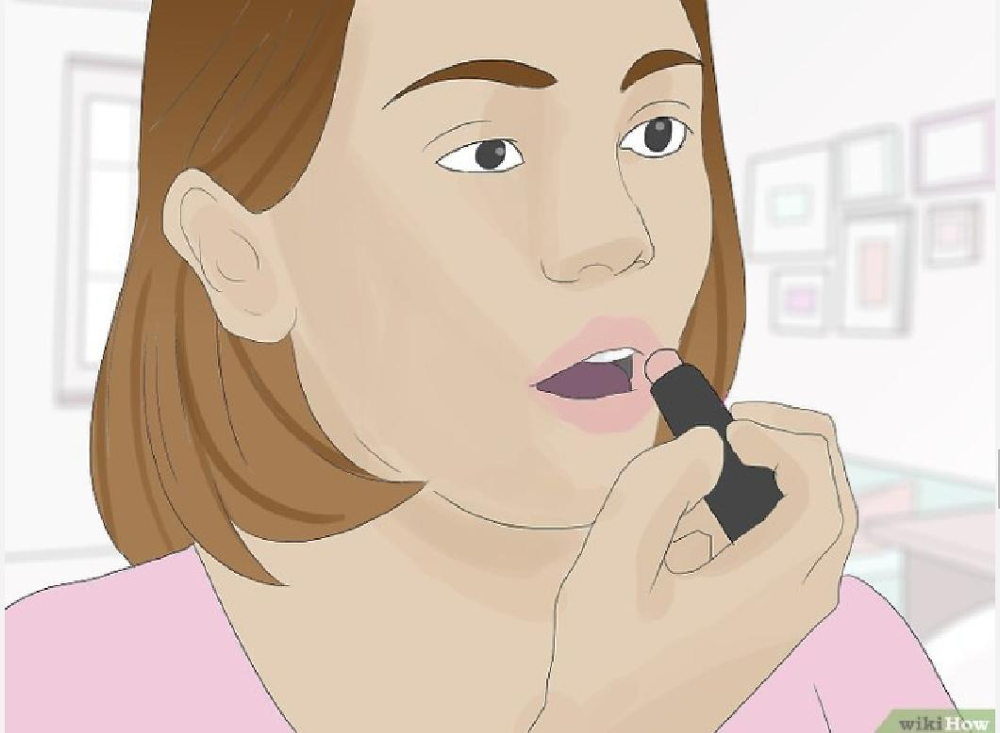

1
Apply concealer sparingly. You may choose to add concealer on dark circles under your eyes or blemishes around your face.
Use clean fingers or a makeup sponge to dab a small amount of concealer on problem areas.
Be sure to blend it in well so you don’t appear to have blotches on your face

2
Choose a foundation that matches your skin tone.
The best bet is to go with a tinted moisturizing foundation rather than a heavy foundation,
which can look overdone and cause breakouts.
Test out a few shades before purchasing one to make sure you get the right color.
Use a makeup sponge or clean fingers to apply the foundation.
Blend it into your hairline, neck, and by your ears so it doesn’t appear as though
you’re wearing a mask.
:Choose a non-comedogenic foundation, meaning one that won’t clog your pores.
:A cream or gel foundation is best for normal skin.
:A liquid foundation will lock in moisture if you have dry skin.
:Use a cream powder if your skin is oily.
:Use a mousse foundation for combination skin.

3
Apply concealer sparingly. You may choose to add concealer on dark circles under your eyes or blemishes around your face.
Use clean fingers or a makeup sponge to dab a small amount of concealer on problem areas.
Be sure to blend it in well so you don’t appear to have blotches on your face

4
Pick a light blush. A light blush with a bit of shimmer would be great for a special occasion.
Apply it by swiping a blush brush across your cheekbones, starting at the inside of your cheek and moving
back toward your hairline.
Be sure to blend it in so it looks like your cheeks are naturally rosy.

5
Add a neutral eye shadow. Choose a color within a few shades of your natural skin tone, such as light pink, cream, tan or beige, bronze, or light brown. Use an eyeshadow brush to sweep a thin layer of shadow onto your eyelids, starting at the inner corner and moving outward. Avoid adding eye shadow above the natural crease in your eyelid.
Eye shadow comes in powders as well as creams, though creams tend to smudge and crease more easily.

6
Apply a thin line of eyeliner. If you want to glam up your look, applying a bit of eyeliner can do so. Choose a pencil eyeliner, rather than a liquid one, for a subtle look. Start at the inner corner of your eye and lightly trace your upper lash line, keeping the liner as close to your lashes as possible, moving toward the outer corner of your eye.
You can also apply eyeliner to your lower lid as well. Start at the outer corner of your eye and only apply the eyeliner to two-thirds of your lower lid. Avoid creating a complete circle around your eye, which can look a bit harsh.
Use a makeup brush or a cotton swab to soften the lines and ensure they are even.

7
Curl your eyelashes. If you like, you can curl your eyelashes to create a stronger curve. Use a curling wand to lightly squeeze your eyelashes close to the base. Then, move the curler toward the middle of your eyelashes and lightly squeeze again. This will result in a pretty curve rather than a crimp at an odd angle. You can leave your lashes as is, or apply a light coat of mascara.

8
Add two coats of mascara for extra definition. For special occasions you may want to make your eyes stand out by using a bit more mascara than usual. Use the wand to thinly coat your lashes, starting closer to your lash line and sweeping toward the tips of your lashes. Allow the mascara to dry before applying a second coat. Use a wet cotton swab to remove any mascara that may have gotten on the skin around your eyes.[14]
After doing your top lashes, you can add a light coat to your bottom lashes as well. Rather than dipping the mascara wand back into the product, swipe a light coat on your bottom lashes after applying mascara to your top lashes.

9
Finish your look with lip color. You may want to choose a color that’s a bit darker or bolder than one you would use for your everyday look. You can pick a matte lipstick or a shiny gloss. Red, coral, or pink would be good choices. If you go for a lipstick, make sure to blot it (put a tissue between your lips and press down gently) before you head out to your event